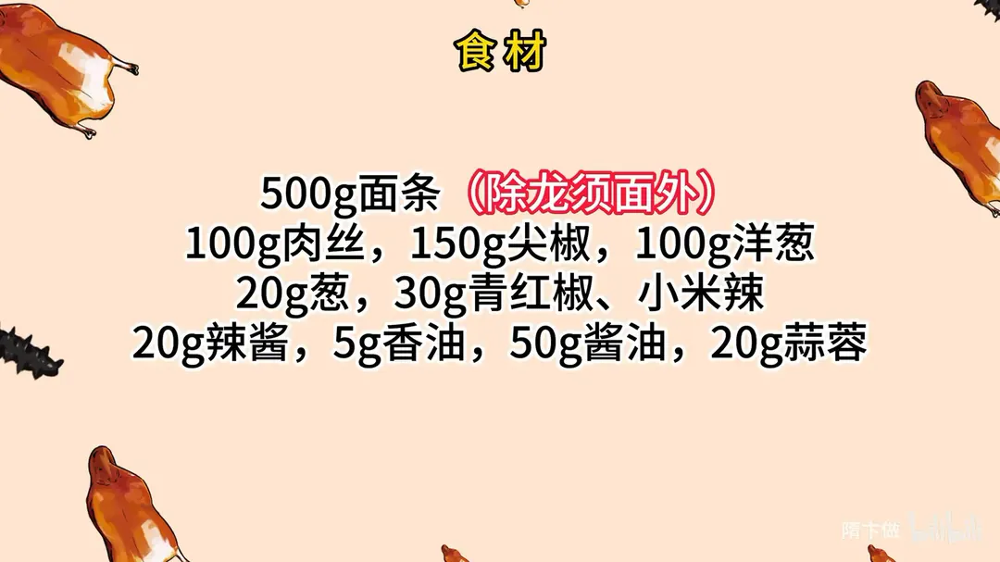
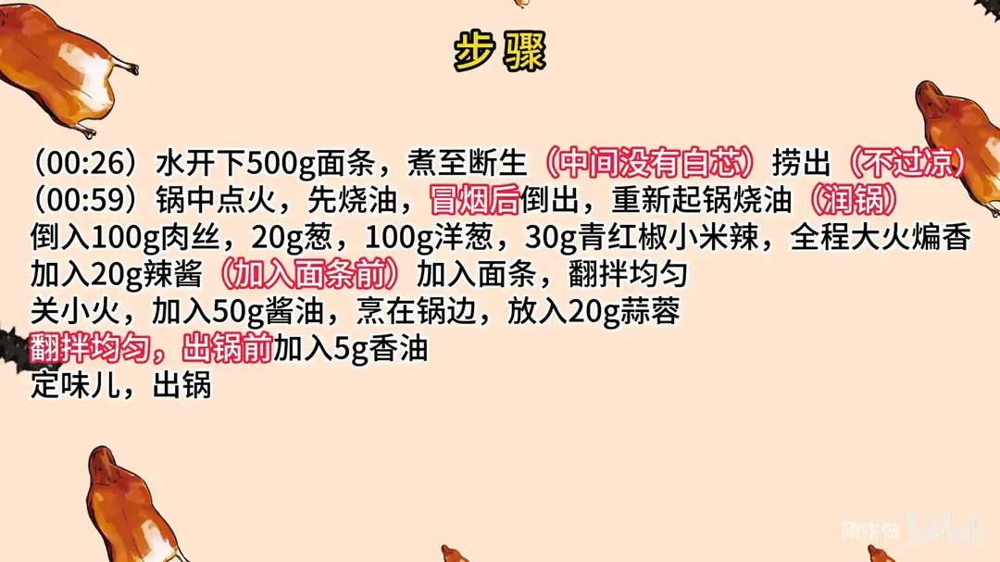

家常炒面
隋卞一做。500g 面条煮至断生、中间无白芯就捞出，绝不过凉水；肉丝配尖椒、洋葱全程大火煸香，辣酱要在下面条之前下锅，最后沿锅边烹 50g 酱油、撒 20g 蒜蓉，出锅前点 5g 香油。
原视频：https://www.bilibili.com/video/BV1Aa4y1R7pA
食材
面条、肉丝 等 10 样
| 类别 | 用料 | 用量 |
|---|---|---|
| 主料 | 面条（除龙须面外） | 500g |
| 主料 | 肉丝 | 100g |
| 配料 | 尖椒 | 150g |
| 配料 | 洋葱 | 100g |
| 配料 | 葱 | 20g |
| 配料 | 青红椒、小米辣 | 30g |
| 调料 | 辣酱 | 20g |
| 调料 | 酱油 | 50g |
| 调料 | 蒜蓉 | 20g |
| 调料 | 香油 | 5g |
步骤
- 煮面：水开后下 500g 面条，煮至断生（中间没有白芯）捞出，不过凉水。
- 润锅：锅中点火先烧油，油冒烟后把油倒出，重新起锅烧油润锅。
- 煸肉丝：倒入 100g 肉丝、20g 葱、100g 洋葱、30g 青红椒和小米辣，全程大火煸香。
- 下辣酱：加入 20g 辣酱，一定要在下面条之前下锅。
- 下面条：加入煮好的面条，翻拌均匀。
- 调味：关小火，加入 50g 酱油烹在锅边，放入 20g 蒜蓉，翻拌均匀。
- 出锅：出锅前加入 5g 香油，定味儿，出锅。
讲解要点
难度：★★☆☆☆（难点是煮面的度——多煮一分就黏，少煮一分就硬）
为什么这么做
- 煮面水一定要宽：水少面汤就稠，面条表面挂一层糊，下锅必然粘成一团。
- 煮到中间没白芯就捞、绝不过凉水：芯透了但表面还带糊化淀粉，正好在锅里吸酱挂味；过凉水把表面淀粉冲掉，既不吃味也不香。
- 全程大火煸配料：先把肉丝和蔬菜的水汽炒干，香味才出得来。
- 辣酱一定要在面条之前下：酱得先在油里炒开、裹住肉丝；顺序反了肉丝就不进味。
- 面条下锅后关小火拌：大火容易把面炒断、炒糊。
- 酱油烹在锅边、蒜蓉最后放：锅边温度最高，酱油一瞬间焦化出酱香，直接浇在面上只有咸味；蒜香是挥发的，早放就炒没了。
- 出锅前锅底要有扒锅状态：那点微焦就是炒面的锅气，锅太干净反而炒不出香。
容易翻车
- 面煮过头或过了凉水，炒出来黏糊糊、糊嘴。
- 辣酱跟面条一起下，肉丝没味。
- 火太小，面越炒越出水。
- 酱油不烹锅边直接倒，只有咸没有香。
- 油太少，面扒不住锅也带不出香。
热评补充
- 想要更干爽，可以买细面条，拌点素油上锅蒸 10 分钟再抖散下锅炒；煮面再炒的火候不好把握，容易黏糊。
原片尾卡


原片文案
AI 字幕校准稿
你跟别的厨师不一样的地方，调料不会乱用。上次给你们做个炝锅面，没想到你们那么喜欢，既然你们那么喜欢吃面，今天再给你们来个炒面，也是有手就会。
在家里面什么面都行，圆的扁的、挂面都行；这些配料就是家里有什么就放什么，我们今天准备了肉丝、青椒、葱头。
第一个关键点，煮面条的水一定要宽。什么意思呢？就是煮完面条外面不能黏黏糊糊的，不然炒出来就一锅粥了。面条放进去动一动，防止它粘锅；烧开之后关成中火，让它慢慢翻，就这么煮着就行。面条怎么叫熟？尝一口，咬开中间看有没有白心，没白心就熟了。放在旁边，不过水。
起锅烧油，把肉丝倒进去煸炒，把葱放进去，全程大火；洋葱倒进去，青红椒、小米辣，把所有的料煸香。
放入辣酱，这个一定是在这会儿放，在下面条之前——先放面条，有可能这个肉丝就不进味了。这会儿放面条，关小火，拿这个料跟面条给它拌匀。看面条都拌上料油色了之后，咱们要加酱油，这个酱油烹在锅边上。放入蒜蓉，给下味道。香油来点，好了出锅了。
越吃越想吃辣，越吃越爽；他看着可是真不赖。就觉得很怪——上次做炝锅面，明明没有放那么多调料，最后出来的味道好香；这个也是里面放了蒜蓉辣酱和酱油，味道好香。
但香不是那种调料的味道，它里面每个味道都可以让你非常清晰地感受到，而且是非常融合的那种香，整个面干爽筋道，所有味道全部浸到面条里面去了。
这就是你在最后快出锅之前，你看锅底上有要扒锅的状态了，那是很关键的一个点。如果锅里边很干净了，就可能难以炒出这种香气来。而且油的量也合适，出锅一点底油都不剩。
这个面适合大家适合在哪？第一，调料特别简单，只有蒜蓉辣酱和酱油就可以做；第二个，里面的配菜，碗里面加鸡蛋、加火腿肠，不管加什么都可以。回家就是很好吃的家常炒面，调料不会乱用，真的是恰到好处。大家在家试一下。